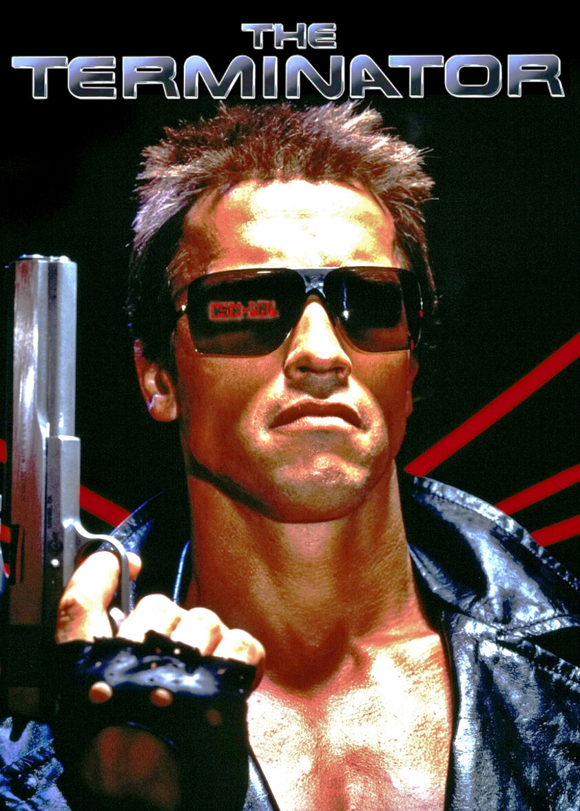
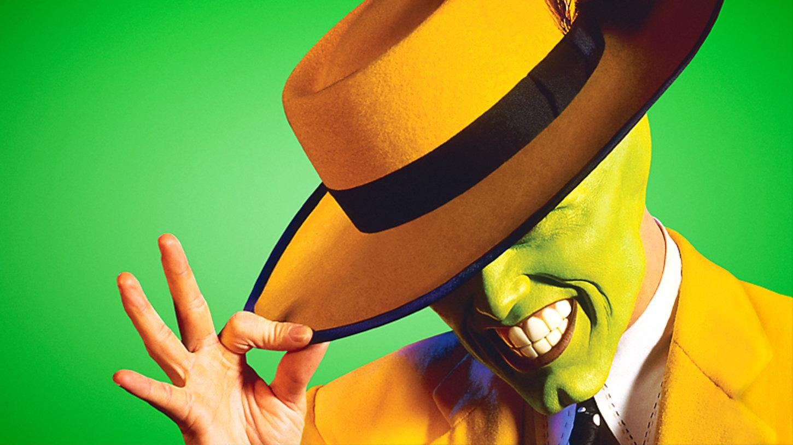
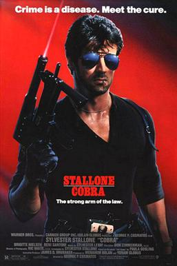

This is my favourite science fiction action film.
superhero comedy film directed by Chuck Russell and produced by Bob Engelman from a screenplay by Mike Werb and a story by Michael Fallon and Mark Verheiden. Really cool sci-fi movie.
Film was based on the novel A Running Duck by Paula Gosling, which was later published as Fair Game and filmed under that title in 1995.
